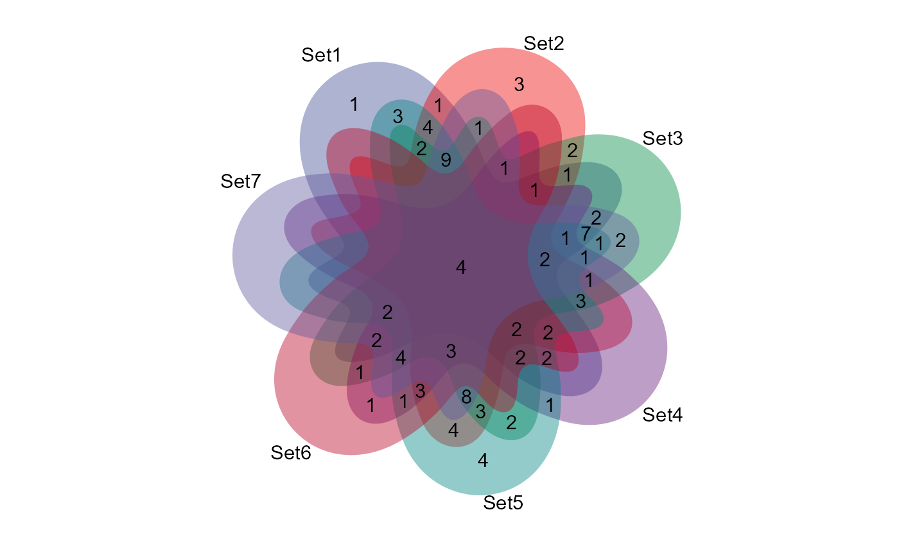
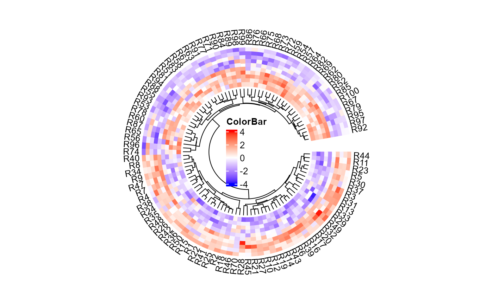
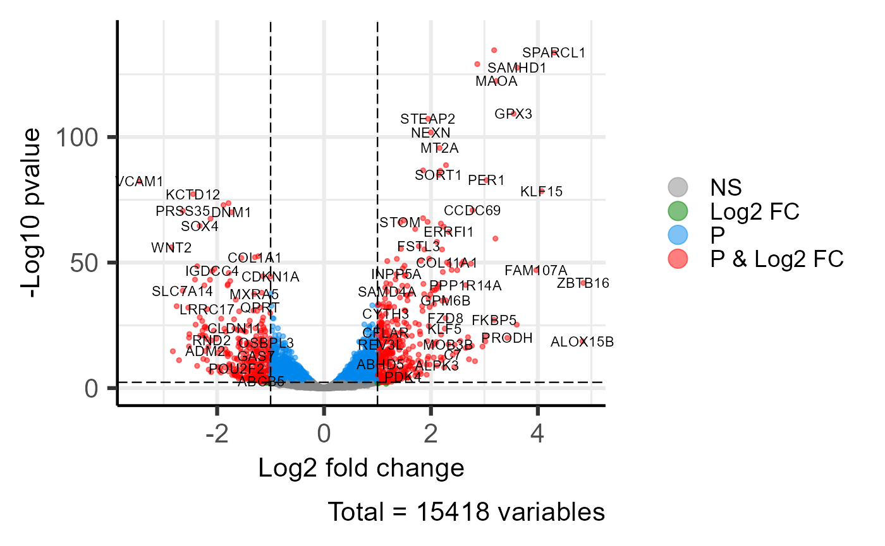
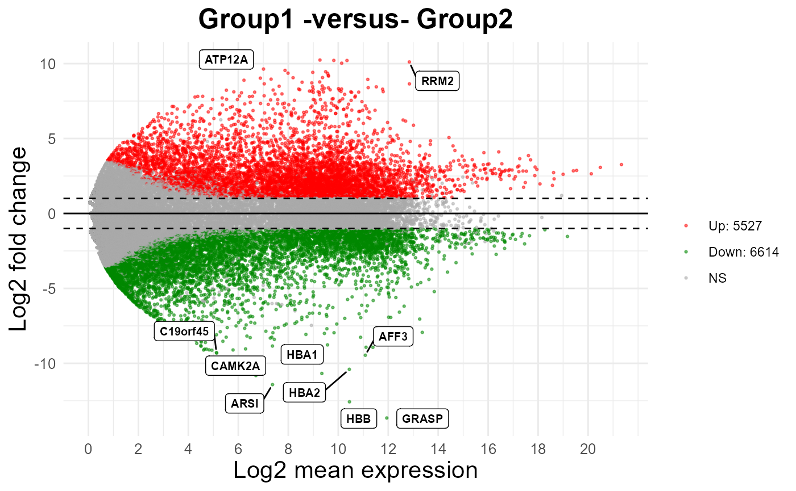
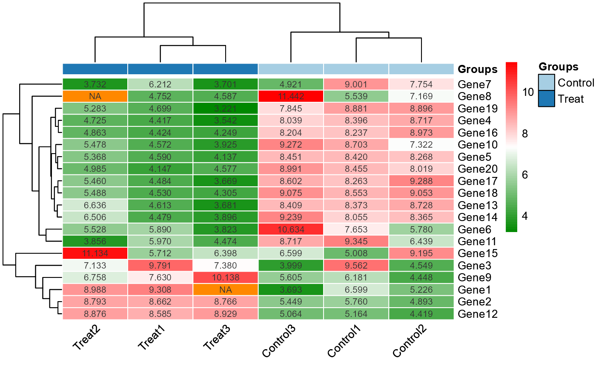

3. Differential Expression Analyais
3.1 venn_plot
Venn plot for stat common and unique gene among multiple sets.
library(TOmicsVis)
#>
#> Registered S3 method overwritten by 'GGally':
#> method from
#> +.gg ggplot2
# 1. Load venn_data example datasets
data(venn_data)
# 2. Run venn_plot plot function
venn_plot(
venn_data,
line_type = "blank",
ellipse_shape = "circle",
sci_fill_color = "Sci_AAAS",
sci_fill_alpha = 0.65
)
Get help using command ?TOmicsVis::venn_plot or
reference page https://benben-miao.github.io/TOmicsVis/reference/venn_plot.html.
# Get help with command in R console.
# ?TOmicsVis::venn_plot3.2 circos_heatmap
Circos heatmap plot for visualizing gene expressing in multiple samples.
# 1. Load circos_heatmap_data example datasets
data(circos_heatmap_data)
# 2. Run circos_heatmap plot function
circos_heatmap(
circos_heatmap_data,
low_color = "#0000ff",
mid_color = "#ffffff",
high_color = "#ff0000",
gap_size = 10,
cluster_method = "complete",
distance_method = "euclidean",
dend_height = 0.2,
rowname_size = 0.8
)
Get help using command ?TOmicsVis::circos_heatmap or
reference page https://benben-miao.github.io/TOmicsVis/reference/circos_heatmap.html.
# Get help with command in R console.
# ?TOmicsVis::circos_heatmap3.3 volcano_plot
Volcano plot for visualizing differentailly expressed genes.
# 1. Load deg_data example datasets
data(deg_data)
# 2. Run volcano_plot plot function
volcano_plot(
deg_data,
log2fc_cutoff = 1,
pq_value = "pvalue",
pq_cutoff = 0.005,
cutoff_line = "longdash",
point_shape = "large_circle",
point_size = 1,
point_alpha = 0.5,
color_normal = "#888888",
color_log2fc = "#008000",
color_pvalue = "#0088ee",
color_Log2fc_p = "#ff0000",
label_size = 3,
boxed_labels = FALSE,
draw_connectors = FALSE,
legend_pos = "right"
)
Get help using command ?TOmicsVis::volcano_plot or
reference page https://benben-miao.github.io/TOmicsVis/reference/volcano_plot.html.
# Get help with command in R console.
# ?TOmicsVis::volcano_plot3.4 ma_plot
MversusA plot for visualizing differentially expressed genes.
# 1. Load deg_data example datasets
data(deg_data2)
# 2. Run volcano_plot plot function
ma_plot(
deg_data2,
foldchange = 2,
fdr_value = 0.05,
point_size = 0.5,
color_up = "#FF0000",
color_down = "#008800",
color_alpha = 0.5,
top_method = "fc",
top_num = 20,
label_size = 8,
label_box = TRUE,
title = "Group1 -versus- Group2",
xlab = "Log2 mean expression",
ylab = "Log2 fold change",
ggTheme = "theme_minimal"
)
Get help using command ?TOmicsVis::ma_plot or reference
page https://benben-miao.github.io/TOmicsVis/reference/ma_plot.html.
# Get help with command in R console.
# ?TOmicsVis::ma_plot3.5 heatmap_group
Heatmap group for visualizing grouped gene expression data.
# 1. Load example datasets
data(heatmap_group_data)
head(heatmap_group_data)
#> V2 V3 V4 V5 V6 V7
#> Groups Control Control Control Treat Treat Treat
#> GeneID Control1 Control2 Control3 Treat1 Treat2 Treat3
#> Gene1 6.59934411 5.226266025 3.693287538 9.308119032 8.987864851 <NA>
#> Gene2 5.760380377 4.892783021 5.448923917 8.66208104 8.793319848 8.765914637
#> Gene3 9.561905115 4.549168157 3.998654922 9.790770004 7.133187551 7.37959102
#> Gene4 8.396409316 8.71705522 8.03906411 4.417013007 4.725269731 3.542216879
# 2. Run heatmap_group plot function
heatmap_group(
heatmap_group_data,
scale_data = "none",
clust_method = "complete",
border_show = TRUE,
value_show = TRUE,
low_color = "#00880088",
mid_color = "#ffffff",
high_color = "#ff000088",
na_color = "#ff8800",
x_angle = 45
)
Get help using command ?TOmicsVis::heatmap_group or
reference page https://benben-miao.github.io/TOmicsVis/reference/heatmap_group.html.
# Get help with command in R console.
# ?TOmicsVis::heatmap_group